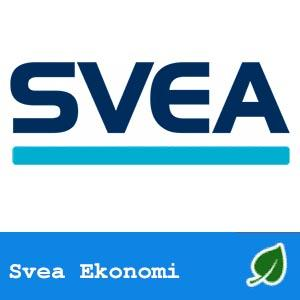

Omstartslån från Svea Ekonomi
[no_toc]
Vanlig kreditsituation:
Vi har räknat på ett lån på 200 000 kr med återbetalningstid på 7 år och en ränta på 7,90 %. Räntan är rörlig. Det tillkommer en uppläggningsavgift på 395 kr och en administrationsavgift för autogiro på 25 kr / månad. Det ger en effektiv ränta på 8,94 %.
Statistik (jämför med 41 långivare)
| Exempel: Ränta | 8,94 % (plats 11 av 41 långivare som uppgett exempelränta) och 16,16 % [enheter] lägre än genomsnittet. |
| Lägst och beviljad ränta | Exempelräntan i en vanlig kreditsituation (8,94 %) är
3,15 % [enheter] högre än Sveas lägst annonserade ränta (5,79 %) .
|
| Exempel: Belopp | 200 000 kr (plats 3 av 40 långivare som uppgett exempelbelopp). Det genomsnittligt beviljade beloppet är 130 113 kr högre än genomsnittet för alla lån. |
| Högst och beviljade belopp | Beviljat belopp i en vanlig kreditsituation (200 000 kr) motsvarar 50,0 % av Sveas högsta lånebelopp (400 000 kr) . |
| Uppläggning; Avgift |
395
kronor är 5 kronor lägre än genomsnittet (400 kr) för de 26 långivare som tar uppläggningsavgift.
|
| Aviavgift |
25
kronor är 10 kronor lägre än genomsnittet (35 kr) för de 22 långivare som tar uppläggningsavgift.
|
| Trustpilot |
Ej betygsatt på Trustpilot. |

Svealånet är ett blancolån på 10 000 – 400 000 kr som inte kräver någon säkerhet. Det går att ansöka om ett lån dygnet runt via webbplatsen och det är fritt att disponera pengarna som man själv vill. Svealånet ger möjligheter att tidigarelägga inköp och upplevelser som annars hade fått vänta på många års idogt gnetande och sparande.
Sverigelånet kan användas för att att köpa möbler till hemmet, en resa till ett exotiskt land eller för att bli av med andra dyrare och sämre lån.
Genom att samla lån med lägre ränta hos Svea går det att få lägre ränta och månadskostnad genom att man blir av med dyra och dåliga lån och krediter. Räntan som erbjuds baseras på uppgifterna i kreditupplysningen och ligger på 6,90 – 25,95% med en återbetalningstid på 2 – 15 år.
Svealånet är ett blancolån
Svealånet är en av många olika låneprodukter från Svea Ekonomi med ungefär samma ansökningsprocess. Fyll i det digitala formuläret på webbplatsen och börja med att välja lånebelopp, återbetalningstid samt om du vill utnyttja möjligheten till amorteringsfria månader. Efter det efterfrågas ett antal grunduppgifter om dig själv och din privatekonomi som måste fyllas i.
Efter att du lämnat samtliga uppgifter och klickat på knappen inhämtas uppgifter ur offentliga dataregister genom att en så kallad kreditupplysning.
Om lånet beviljas får du lånebesked direkt på skärmen och kan skriva under med din e-legitimation.
Svealånet är ett blancolån från Svea Ekonomi.
Typer av lån som erbjuds
Svea Bank erbjuder ett antal olika typer av lån till privatpersoner. Dessa inkluderar:
Privatlån: Ett privatlån är ett lån som kan användas för olika ändamål, till exempel att finansiera en resa eller renovera hemmet. Detta lån har oftast en fast ränta och en fast återbetalningstid.
Billån: Ett billån är ett lån som kan användas för att köpa en bil. Detta lån har oftast en ränta som är lägre än för ett privatlån och en längre återbetalningstid.
Renoveringslån: Ett renoveringslån kan användas för att finansiera renoveringar eller ombyggnader av hemmet. Detta lån har oftast en fast ränta och en längre återbetalningstid än ett privatlån.
Samlingslån: Ett samlingslån är ett lån som används för att samla flera mindre lån eller krediter till ett enda lån. Detta lån har oftast en lägre ränta än de mindre lånen och kan göra det enklare att hantera ekonomin.
Villkor och krav
För att ansöka om ett lån från Svea Bank måste du uppfylla vissa krav. Du måste vara minst 18 år gammal, ha en fast inkomst och inte ha några betalningsanmärkningar. Beroende på vilken typ av lån du ansöker om kan det finnas ytterligare krav, till exempel att bilen du köper måste vara nyare än ett visst antal år eller att du måste ha ägt ditt hem under en viss tid.
Villkoren för varje lån kan variera beroende på dina personliga förutsättningar och önskemål. Räntan beror till exempel på din kreditvärdighet och återbetalningstiden kan variera från ett par år till upp till 15 år, beroende på vilken typ av lån du ansöker om. Det är viktigt att läsa igenom villkoren noga innan du ansöker om ett lån, så att du förstår vad som krävs och vilka kostnader som är involverade.
Svealånet från Svea Ekonomi är ett lån som erbjuds till privatpersoner för att finansiera större inköp eller betala av tidigare skulder. Det är ett av de mest populära lånealternativen på marknaden idag, med konkurrenskraftiga räntor och flexibla villkor. I denna artikel kommer vi att titta närmare på vad Svealånet är, vilka villkor och krav som gäller, och hur man ansöker om lånet.
Vad är Svealånet?
Svealånet är ett blancolån, vilket innebär att det inte kräver någon säkerhet. Detta gör det enklare för många att ansöka om lånet eftersom de inte behöver erbjuda någon tillgång som säkerhet. Lånet kan användas till olika ändamål, såsom att renovera hemmet, köpa en bil eller betala av tidigare skulder.
Villkor och krav
För att ansöka om Svealånet måste du uppfylla vissa krav. Du måste vara minst 18 år gammal, ha en fast inkomst och inte ha några betalningsanmärkningar. Du måste också ha varit bosatt i Sverige i minst ett år och ha ett svenskt personnummer.
Villkoren för Svealånet varierar beroende på dina personliga förutsättningar och önskemål. Räntan på lånet beror på din kreditvärdighet och återbetalningstiden kan variera från ett par år upp till 15 år. Du kan ansöka om att låna upp till 500 000 kronor med Svealånet, vilket gör det till ett lämpligt alternativ för större inköp eller betalning av högre skulder.
Ansökningsprocessen
För att ansöka om Svealånet behöver du besöka Svea Ekonomis webbplats och fylla i en ansökan. Du behöver ange dina personliga uppgifter, inklusive din inkomst och dina utgifter, för att bedöma din kreditvärdighet och bestämma om du är berättigad till lånet.
Efter att ha skickat in din ansökan kommer Svea Ekonomi att göra en kreditupplysning för att bedöma din kreditvärdighet och fastställa vilken ränta du är berättigad till. Om din ansökan godkänns kommer du att få en offert med villkor och ränta som du kan godkänna eller avböja. Om du godkänner offerten kommer pengarna att sättas in på ditt konto inom några dagar.
Svealånet från Svea Ekonomi är ett populärt blancolån som erbjuds till privatpersoner för att finansiera olika ändamål, såsom att renovera hemmet, köpa en bil eller betala av tidigare skulder. Svealånet har flera fördelar som gör det till ett attraktivt alternativ för den som behöver låna pengar. I denna artikel kommer vi att titta närmare på några av de främsta fördelarna med Svealånet.
Ingen säkerhet krävs
En av de främsta fördelarna med Svealånet är att det inte kräver någon säkerhet. Detta innebär att du inte behöver erbjuda någon tillgång som säkerhet för att få lånet. Detta gör det enklare för många att ansöka om lånet eftersom de inte behöver oroa sig för att förlora någon tillgång om de inte kan betala tillbaka lånet i tid.
Flexibla villkor
Svealånet erbjuder också flexibla villkor som gör det möjligt för dig att anpassa lånet efter dina behov och önskemål. Du kan välja en återbetalningstid som passar din ekonomiska situation, från ett par år upp till 15 år. Räntan på lånet beror på din kreditvärdighet och återbetalningstiden, så du kan välja de villkor som passar dig bäst.
Låna upp till 500 000 kronor
Med Svealånet kan du låna upp till 500 000 kronor, vilket gör det till ett lämpligt alternativ för större inköp eller betalning av högre skulder. Du behöver inte ansöka om flera olika lån för att finansiera olika inköp eller skulder, utan kan istället få ett större lån som täcker alla dina behov.
Snabb och enkel ansökningsprocess
Att ansöka om Svealånet är en snabb och enkel process. Du behöver besöka Svea Ekonomis webbplats och fylla i en ansökan. Du behöver ange dina personliga uppgifter, inklusive din inkomst och dina utgifter, för att bedöma din kreditvärdighet och bestämma om du är berättigad till lånet.
Efter att ha skickat in din ansökan kommer Svea Ekonomi att göra en kreditupplysning och skicka en offert med villkor och ränta som du kan godkänna eller avböja. Om du godkänner offerten kommer pengarna att sättas in på ditt konto inom några dagar.
Låna utan dolda avgifter
Svealånet har inga dolda avgifter eller extra kostnader som du behöver betala. Du behöver bara betala den ränta som du har kommit överens om i låneavtalet och ingenting mer. Detta gör det enklare för dig att planera din återbetalning och undvika oväntade kostnader.</
Utbetalning Svea
Pengarna sätts in på kontot inom några dagar efter att lånet blivit beviljat.
Omstartslån från Svea ekonomi – Svealånet.
Svea Ekonomi är banken som erbjuder Svealånet, bolån och omstartslån som nästan alla svenskar med en fast inkomst kan söka.
De ger ut privatlån och det går att låna från 10 000 kronor – högst går det att med Sveas blancolån att låna 400 000 kronor men de har även bolån upp till 7,5 miljoner. Betalningsanmärkning behöver inte vara ett hinder hos Svea.
Svea Ekonomi erbjuder lån till privatpersoner från 2 000 upp till 400 000 kr utan säkerhet. Lånet kan till exempel användas till oförutsedda utgifter eller för att samla dyra smålån och krediter i ett bättre och billigare hopbakslån.
Det är enkelt att ansöka om att få låna pengar med låg ränta på Sveas hemsida och pengarna sätts in på kontot några dagar efter att lånet blivit beviljat.
Du får enkelt överblick över lånet och kan se din aktuella skuld på webbplatsen. Där går det att se gjorda avbetalningar och övrig information under ”Mina Sidor”.
Räntegaranti
Har du blivit erbjuden ett lån med lägre ränta hos en annan långivare? Med ett lån hos Svea Ekonomi har du i avtalet en räntegaranti som innebär att du alltid kan vara säker på att ha marknadens lägsta effektiva ränta och därmed det billigaste lånet. Räntegarantin innebär att om du mot förmodan blir erbjuden lägre ränta hos en annan långivare kommer de att matcha sin ränta och sänka din ränta till samma nivå.
En kreditprofil skapas automatiskt genom att alla datauppgifter beräknas och ett individuellt erbjudande tas fram med en ränta från 6,9% – 25,95%. En ränta på denna nivå är betydligt lägre än om du istället skulle ta ett snabblån.
Svea lån med betalningsanmärkning
Finansbolaget Svea Ekonomi grundades 1981. och är en europeisk finanskoncern med verksamhet i Skandinavien, Sverige, Finland, Norge, Danmark, Estland, Lettland, Nederländerna, Schweiz, Österrike och Tyskland. De erbjuder administrativa och finansiella lösningar företag samt in- och utlåning till privatpersoner.Koncernens vision är att bli en ledande finansiell aktör i Europa. Vägen dit är att genom personlig service erbjuda effektiva och kundanpassade finansiella tjänster. Ledorden i verksamheten är; Engagemang, Kompetens och Handlingskraft.
Det är en trygg och erfaren långivare med lång branscherfarenhet och kan hitta ett en lösning som passar de flesta.
Svea Ekonomi står under Finansinspektionens tillsyn